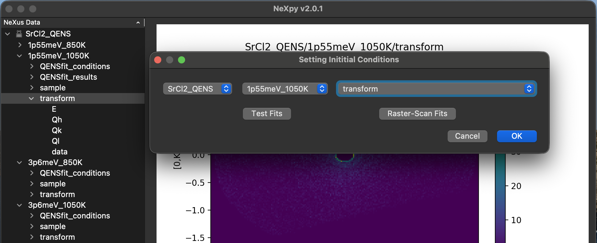
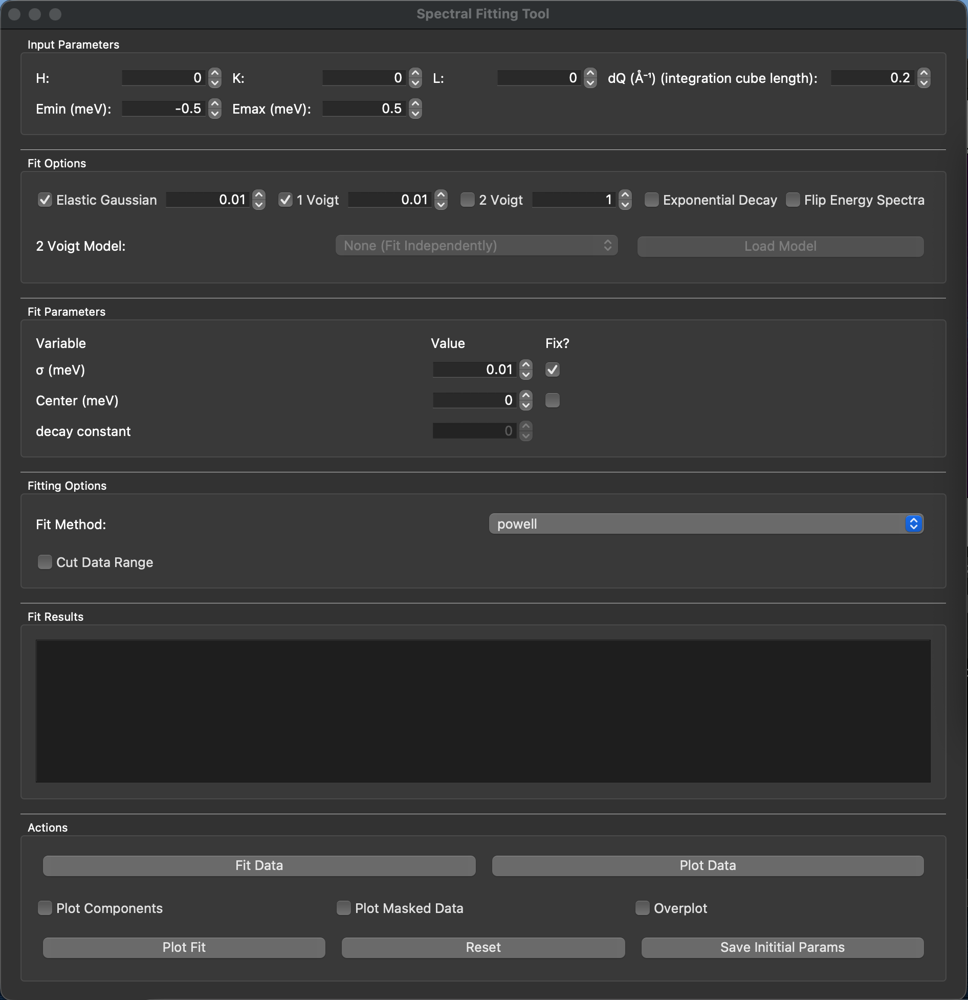

Initializing Fitting Parameters#
From the QENS dropdown menu in NeXpy, select ‘Initialize Fitting.’ From here a window will pop up wich will allow you to select a root, an entry within the selected root, and an NXdata stored within the selected entry. In order to initialize the values we will use for fitting our QENS data we will select the ‘Test Fits’ option.
{kind=link}

Performing Test Fits#
{kind=link}

Once launched you have the option to select which point you want to fit in HKL format (see Data Formatting for more details of how H, K, and L are defined by the system). You can also select the maximum and minimum dE to be fit (in meV) and the length of each cubic voxel.
Note
Currently you are limited to cubic voxel shapes, though future developement of non cubic limitations are planned.
Define Equation#
Once you have selected the points you want to fit, the energy range, and the voxel size, we now need to select our function to fit. Here things become slightly more complicated. Now we need to use the dynamic structure factor and understand our instrumental definitions. The core of the equation to fit is thus:
Here, the convolution of the typically Gaussian resolution function with the different components results in component functions: Gaussian function for the elastic component, and Voigt functions (result of the convolution of Gaussian and Lorenzian functions) for the coherent and incoherent quasielastic components. We assume, as of 0.1.0, a constant background which largely handles most inelastic contributions. Each component (with the exception of the background) can be toggled on or off depending on which contributions are expected to contribute to the dataset.
The value next to each component toggle corresponds to the proportion of LMFIT’s guessed initial value the user wants to use. A value of ‘one’ corresponds to trusting the LMFIT guess system, and smaller would correspond to fractionalizing the guessed values. It has been found in the author’s experience that smaller values are best. If you struggle to get a good fit, try dropping the value in these boxes by a factor of 10.
Additional toggles are available for instruments with exponential Gaussian contributions. One can also flip the energy transfer axis to align the exponential decay of the data with that of the LMFIT exponential gaussian function (decaying towards the right). Applying exponential decay to the fitting equation also applies to background contributions.
Additionally, there is an optional feature to load a model defined voigt linewidth values into the second voigt function. This takes an NXdata class stored in the same entry as the data being fit and reads values from this dataset as fixed values for the second Voigt function’s linewidth values. This can be extremely usefull later on during raster-scan fits of the data to avoid cross-correlations in stored linewidth maps. Work is underway to enable generation of these maps withing QENSfitter4D using Second Voigt Tab.
Fit Parameters#
Fit parameters section of the fit window allows one to define the instrumental resolution for the incident energy measured. Also if there is a known fixed offset ot the zero energy determined one can also apply the known fixed offset. It is possible to let these variables vary, however it may be advantageous to test with and without fixed values in the fitting process. Here also one can define the decay constant for instruments/incident energies with exponential decay components of the resoluiton.
Fitting Options#
It can be usefull to define the fit method one wishes to use. The most common is leastsq (least squares) which does a fine enough job in most cases. However, leastsq has a tendency to get stuck in local minima which is suboptimal. So, it is recommended to use methods such as Powell which is very good at finding global minima. After the function has run the minimization function using the user chosen method, the function finishes the minimization function with leastsq to fine-tune the results and provide errors for the fit variables.
In this section you can also mask a range of data. When the check box is selected the use is prompted to input what range to cut, however the user is currently limited to defining one region. This can be usefull if there are specific energy transfer ranges which are often dominated by inelastic scattering. This also is usefull if, due to tiny incoherent/coherent scattering cross sections, elastic and/or incoherent/coherent contributions confined to low energy transfer are difficult to fit. In such a case the user may opt to cut low magnitude energy transfer and ommit those components from the fitting parameters.
Fit Results#
Here a readout of the fitting results are reported including fit quality and error bars on parameters. The readout follows LMFIT’s parameter report schema.
It is important to note that the linewidths of the voigt components is labeled ‘gamma’ and the instrumental resolution value is labeled ‘sigma’ in most cases. The exception to this case is when the exponential decay option is selected, in which case the voigt ‘sigma’ values are the linewidths and the corresponding gauss ‘sigma’ values represent the resolution of the instrument. This is due to how these functions were handled in order to minimize strain on the LMFIT minimization function.
Actions#
Here we can plot our data, fit our data, plot the fit of our data. Using these three we can verify the quality of our fits using the initial parameters defined in the above sections.
By selecting the ‘Overplot’ checkbox, any time you plot data it will overplot it over other datasets. This can be usefull when visually comparing linewidths of different Q-points. The fit plot will allways overplot irregardless of this checkbox.
By selecting the ‘Plot Masked Data’ checkbox, any time you plot the data it will only show the unmasked data. This can be usefull for dialing in the cut energy transfer range.
By selecting the ‘Plot Components’ checkbox, any time the fit is plotted additional datasets for the different included functions will also be plotted alongside the fit. By enabling the legend under the plot options one can see which component is which.
The Reset button resets all window values (except H,K,L) to the saved initial parameters. If no initial parameters are saved it will default all values to the default values which load when first launched on a new dataset.
Save initial params will save all avlues (execpt H,K,L) to an NXprocess in the same entry as the data. These conditions are labeled QENSfit_conditions. One can manually read and adjust the values here as well if desired. It is best practice to not over-constrain the initial variables to one point, but to rather find initial values which will work for all Q-points in the data so that the later raster-scan functions will optimally fit to the full dataset.
Note
By default NeXus files are locked and will not allow the user to save the parameters. The author of this package has elected to maintain this and not introduce automatic unlocking protocols to the Save Params button in order to avoid accidental overwritting. It is on the user to right click the NXroot and unlock the file before clicking the Save Params button in order to properly save the parameters.
NXQENS function#
One can alternatively use the ‘’nxqensfit.NXQENS()’’ function for hand fits of individual voxels. This is the core function used in the initialization process and in the raster-scan fitting algorithms.
- nxqensfit.NXQENS(
- x,
- y,
- mask=None,
- g1=False,
- v1=False,
- v2=False,
- decay=False,
- g1frac=0.01,
- v1frac=0.01,
- v2frac=0.01,
- sigma=0.1,
- center=0,
- decayval=0,
- fixsigma=False,
- fixcenter=False,
- v2gamm=None,
- method='Powell',
dtypes and cases descriptors of NXQENS variables
- x,y: float arrays
Data x,y values
- mask: float array
Data to not fit (data points corresponding to 1 in the mask do not factor in the fit)
- g1,v1,v2,decay: bool
Boolian decisions for including gauss, voigt(s), and exponential decay contributions to fit
- g1frac,v1frac,v2frac: float
Float values indicating proportion of LMFIT guess amplitudes to force before fitting
- sigma: float
Gaussian sigma parameter
- center: float
Peak center position
- decayval: float
Value used by exponential decay in the event there is an exponential decay contribution
- fixsigma,fixcenter: bool
State if given sigma or center values should be fixed (True) or allowed to vary (False)
- v2gamm: float
If not None, will pass v2gamm as fixed variable for second Voigt Gamma parameter